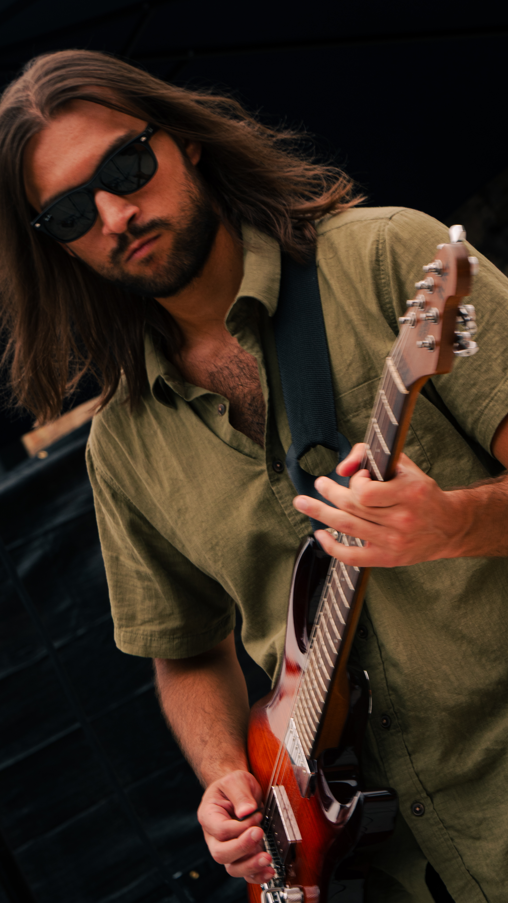
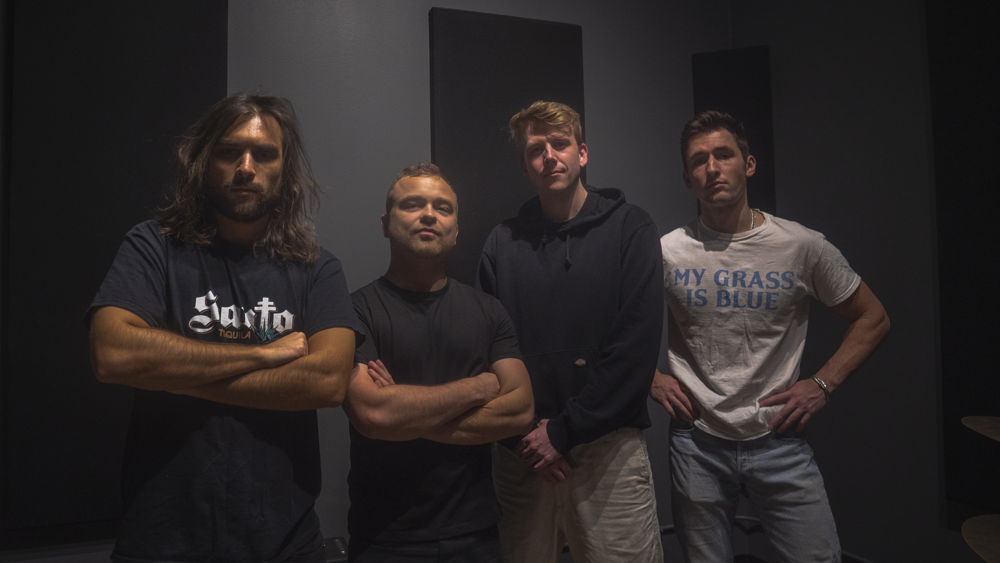

Newest single
She's Here For Me
Ruby's newest release adds another big melodic lane to the band's original music and gives new listeners an easy entry point.
Original music
Ruby's original side gives fans and promoters a deeper reason to pay attention. This page is designed to make that feel intentional, not secondary.
Current releases
Newest single
Ruby's newest release adds another big melodic lane to the band's original music and gives new listeners an easy entry point.

Featured single
A punchy release with a big-chorus feel and the kind of polished live-band energy that fits Ruby's identity.

Featured single
A moodier, more cinematic release that shows a second lane in the band's writing and sound.
Music video area
Right now this is a placeholder so the page still feels complete. Once you give me the video link, I can replace it with a real embed.
